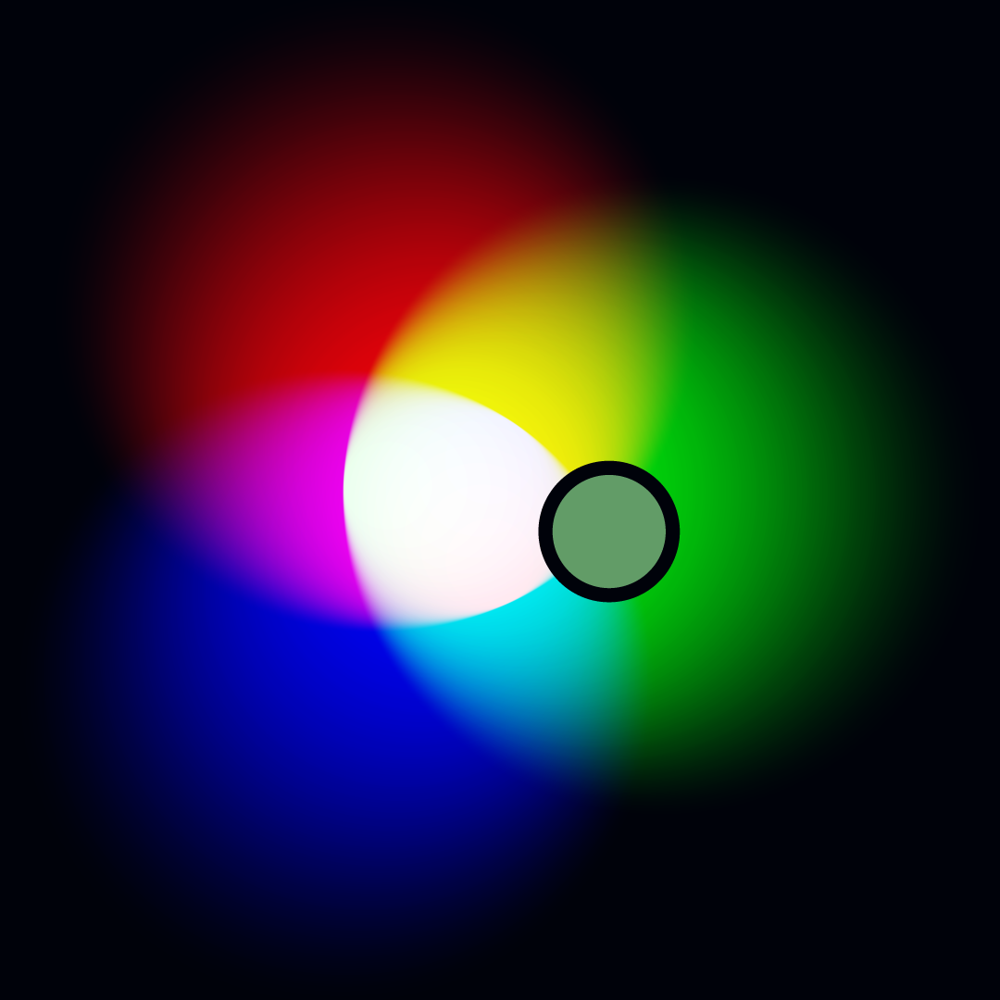
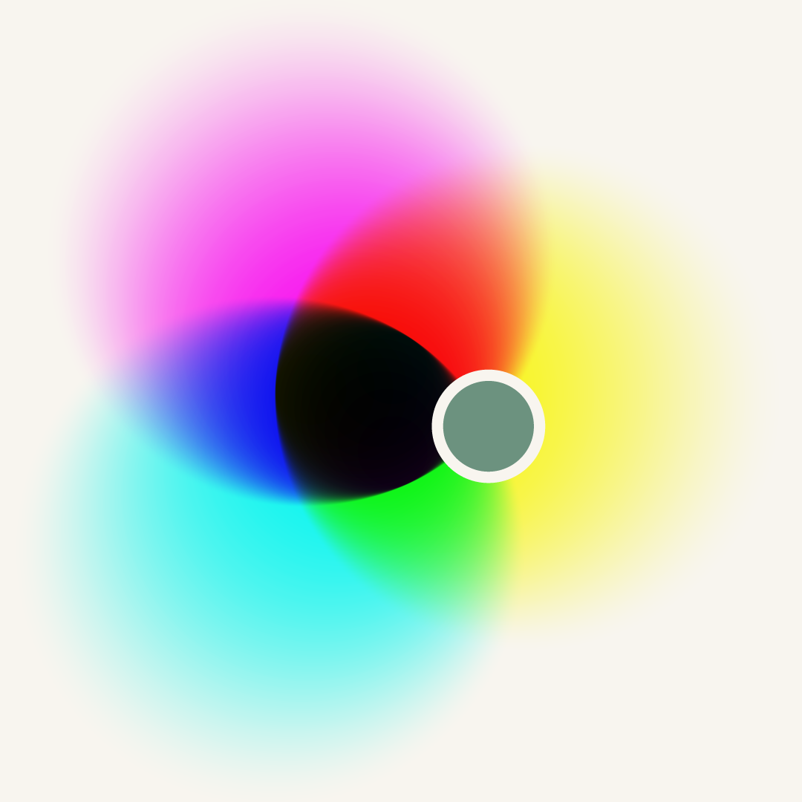

Why color isn’t as simple as it looks
Here’s the thing about color: it’s not absolute. It’s part physics, part biology, and part psychology. That means what we see isn’t always what’s “really there.”
Color is contextual
The same light mix can look totally different depending on what’s around it. Take orange vs. brown—they can be the exact same wavelengths. Give it a dark background or put it next to vivid colors, and it feels orange. With a light background or set against pale tones, and suddenly it’s brown. Context is everything.
Color is subjective
In 2015, the internet argued nonstop about “the dress.” Some people saw white and gold, others swore it was blue and black. Both were right in a way—the photo was ambiguous, and our brains made different guesses about the lighting. It was a viral reminder that color lives in the eye of the beholder.
Why this matters: If color can shift depending on light, surroundings, and even who’s looking, then converting from one system (like screens) to another (like print) is never straightforward. That’s why we need all the steps you’re about to see.
In practice, you don’t usually sit down with a calculator to work through gamma curves and Lab values yourself—your design software and printer drivers handle all of that automatically. What this guide shows is the chain of conversions happening behind the curtain. Understanding it helps you know why colors sometimes look different when you move between screen and print, and what’s really going on when you pick a rendering intent or adjust your export settings.
RGB unplugged: the quest to CMYK
On your screen, colors live in sRGB—they’re made from mixing red, green, and blue light. On paper, colors live in CMYK—they’re made from mixing cyan, magenta, yellow, and black pigments. Because light and pigment behave differently, we need to convert them so what you see on screen matches what comes out in print.
Worked example color
#629C67
| Hex | #629C67 |
|---|---|
| sRGB 8‑bit | (98, 156, 103) |
| sRGB 0–1 | (0.384314, 0.611765, 0.403922) |
Why this process?
Digital colors live in sRGB (gamma‑encoded, D65 white). Press profiles expect D50 and define pigment behavior via ICC LUTs (tone curves, GCR/UCR, total pigment). To get reliable CMYK, we decode gamma → linear, convert to XYZ, adapt D65→D50, go to Lab (perceptual), then apply the press ICC.
 
WTF is D50? I thought we were doing color conversion, not playing DnD
Don’t worry—no dice rolls required. D50 and D65 are just standardized “types” of daylight that get used in color work so everyone talks about light the same way. When you look at a color, it's always under some kind of light. That light’s color is called the white point—basically, whatever we decided is pure white here. D50 and D65 are two official daylight white points from the CIE (the group that standardizes color science).
The “D” means daylight
The D-series illuminants are mathematical models of natural daylight at different times of day and sky conditions.
- D50 → midday light, slightly warm (more yellow/red)
- D65 → midday light, slightly cool (more blue)
The number is the color temperature
The “50” in D50 means 5000 K (Kelvin), the “65” in D65 means 6500 K.
- Lower Kelvin → warmer, yellower light (like late afternoon sun)
- Higher Kelvin → cooler, bluer light (like late morning sky)
Why they matter in print vs. screen
- Screens (sRGB, Rec.709, most monitors) are built around D65—a cool daylight white point.
- Printing (especially in North America and Europe) usually uses D50 for color matching—a warmer daylight white point that matches industry-standard viewing booths for printed proofs.
This means if you convert a color without adjusting from D65 to D50, the print can look “off” because the definition of “white” shifted. This adjustment step is called chromatic adaptation.
8-Bit: not just old-school Nintendo graphics
The same “8-bit” you’ve heard in gaming also runs your colors—8-bit is how computers store each color channel (red, green, and blue) to display on your screen. It’s the reason RGB values range from 0 to 255. Let’s break it down.
Bits are tiny data switches
A bit is the smallest piece of computer data—it can be 0 (off) or 1 (on). String more bits together, and you can represent bigger numbers:
- 1 bit → 2 values (0, 1)
- 2 bits → 4 values (00, 01, 10, 11)
- 8 bits → 256 values (00000000 to 11111111)
Why sRGB stops at 255
Each sRGB channel in an image file gets 8 bits. That’s 256 possible values for how bright that color is—from 0 (none) to 255 (OMG, my eyes!). It’s perfect for storing in one byte, which computers love.
- Red: 0–255
- Green: 0–255
- Blue: 0–255
How this ties to hex codes
Web colors like #629C67 are just those 0–255 numbers written in hexadecimal (base-16). In hex, 0–255 becomes 00–FF. So #629C67 is just three hidden numbers: the amounts of red, green, and blue light your screen mixes.
Sidebar: RGB vs. sRGB
When you see a hex code like 🟧 #FF8800, it isn’t just “RGB” in the abstract, it’s sRGB.
- RGB is a broad idea: any system that mixes red, green, and blue light to describe color. But without a standard, each screen or file could interpret those numbers differently.
- sRGB is that standard. It defines exactly which red, green, and blue primaries to use, what “white” looks like (D65), and how brightness is mapped (the gamma curve). Because it’s consistent, it became the default for the web, most design software, and the majority of monitors.
So in this guide, whenever we start from a hex code, we’re really starting from sRGB values—which we then convert step by step into linear RGB, XYZ, Lab, and finally CMYK.
Fun fact: 8-bit per channel RGB = 24-bit color (8+8+8), giving you 16,777,216 possible colors.Next, we normalize the sRGB values so that they fall within a range of 0 to 1 by dividing each value by 255 (the maximum possible sRGB value). This step is necessary for the math to work correctly.
Decoding the Hex and Normalizing for Math
First, let’s decode the hex.
Our hex color is written in base-16 (hexadecimal), which uses 16 symbols:
0 1 2 3 4 5 6 7 8 9 A B C D E F.
A means 10, B means 11, and so on, up to F which means 15.
When we see a hex code like #629C67, we break it into three pairs:
- 62 (hex) → 98 (base-10) = Red
- 9C (hex) → 156 (base-10) = Green
- 67 (hex) → 103 (base-10) = Blue
Base-10, by the way, is the everyday number system we use, built on 10 symbols (0–9) where each place is worth a power of 10.
Now we normalize.
sRGB values in base-10 go from 0 to 255, but working with “out of 255” numbers is clunky for math.
So we normalize—divide each value by 255 to scale them to a range of 0 to 1:
| Channel | Hex (Base-16) | Decimal (Base-10) | Normalized (÷ 255) |
|---|---|---|---|
| Red | 62 | 98 | 0.3843 |
| Green | 9C | 156 | 0.6118 |
| Blue | 67 | 103 | 0.4039_ |
Once we have 0–1 values, we can do the color conversions with cleaner math and percentages that make sense.
Power-up: gamma decode to linear mode
Next, we need to change our sRGB values to work irl. Right now, sRGB keeps them in a non-linear curve (gamma ≈ 2.2) to make colors look good to human eyes. But the math for converting to CMYK needs linear values—where the brightness matches the actual light energy. This step “straightens out” the curve, a process called linearizing.
Why sRGB isn’t linear
Human vision is more sensitive to dark tones than bright ones. sRGB takes advantage of this by gamma encoding—compressing the bright end and spreading out the dark end—so images look right on screens and use storage more efficiently.
Why printing needs it linear
In the physical world, light and pigment follow linear rules—if you double the energy, you double the brightness. To get accurate results when converting, we first have to undo the gamma curve so the math reflects real-world light behavior.
This formula removes the sRGB gamma curve so the numbers match actual light levels. If the color value is low (c ≤ 0.04045), we divide by 12.92. If it’s higher, we adjust using an exponent of 2.4. The result is a set of linear RGB values that can be used for accurate color calculations.
- 2.4 → the gamma value that shapes the main curve for mid-to-bright tones, matching how our eyes perceive brightness.
- 12.92 → the slope of the linear “toe” at the darkest values, ensuring a smooth transition into the main curve without a visible jump.
- 0.04045 → the breakpoint where the formula switches from the linear toe to the gamma curve.
In short: the gamma curve gives us more precision in shadows, and the linear toe prevents banding at the very darkest levels.
c ≤ 0.04045 → clin = c / 12.92clin = ((c + 0.055) / 1.055)2.4Now, we have “energy-true” RGB values—ready for the next leg of our quest.
Unlocking the world map: Linear RGB → XYZ (D65)
Think of XYZ as the world map in our color color conversion quest—every land (monitor, printer, camera) is charted here. But our RGB colors only know how to read their own local map. To find their exact “You Are Here” marker on the universal map, we translate their coordinates by multiplying our linear RGB values by a fixed 3×3 matrix, built from the RGB primaries (its red/green/blue chromaticities) and its white point (D65).
What is XYZ?
X, Y, Z are standardized coordinates that any device can translate to. The key bit: Y tracks relative luminance (perceived brightness), while X and Z carry the rest of the color information. Using XYZ gets us out of local sRGB space and into the world at large.
What we’re doing here
Treat the linear RGB values as a column vector and multiply by the RGB→XYZ matrix (for D65). The result is XYZ under the same D65 white point (we’ll adapt to D50 in the next step).
Where does this matrix come from?
Y = 0.273518 represents the color’s brightness on a 0–1 scale.
M = ⎡ 0.4124564 0.3575761 0.1804375 ⎤
⎢ 0.2126729 0.7151522 0.0721750 ⎥
⎣ 0.0193339 0.1191920 0.9503041 ⎦
Notice how the middle row (Y) weights green most heavily (≈0.715)—that reflects human sensitivity to green in luminance.
Crossing Realms: From D65 to D50 (Bradford)
Our color is still in the Cool Daylight Realm (D65) and needs to travel to the Warm Sunlight Realm (D50) where print lives. The Bradford transform is our “adaptation spell.” It changes our XYZ coordinates so colors keep their true appearance, even under the warmer sun. We do this by moving into a special “cone-vision space,” scaling each color channel to match the new realm’s white point, then returning to XYZ.
Afterward, our color is fully attuned to the Warm Sunlight Realm and ready for the next stage
What this means on the map
XYZ(D65) pins our color on a map lit by cool daylight. Printing assumes a warmer daylight (D50). Chromatic adaptation re-expresses the same color under the D50 sun so it looks the same to a human observer in that realm.
Where do these numbers come from?
- B and B−1 are the standard Bradford cone-response matrices.
- W65 and W50 are the CIE D65/D50 white points (Y normalized to 1).
- The scale factors (1.0583, 0.9808, 0.7514) are per-channel ratios of cone responses under D50 vs. D65.
In short: we convert to a cone-response space, scale to the target realm’s white, then convert back to XYZ.
Now our color is pinned on the D50 map, ready for Step 5 (XYZ → Lab) before we hand it to the ICC profile.
Stat sheet unlocked: XYZ (D50) → Lab (D50)
CIE L*a*b* (aka “Lab”) is a more human-aligned map for color: L* is lightness, a* runs green↔red, and b* runs blue↔yellow. It’s roughly perceptually uniform, so equal numeric steps feel closer to equal visual steps. Most ICC profile workflows use Lab as the neutral handoff before device-specific CMYK.
What’s an ICC profile?
An ICC profile is like a translation guide for color. It tells software how a specific device—monitor, printer, camera—handles color, so the same “recipe” looks consistent everywhere. Profiles are created by measuring a device’s color behavior, then mapping it to a common standard (like XYZ or Lab) so colors can be converted accurately between devices.
Why switch maps here?
Where do ε and κ come from?
- ε = 216/24389 ≈
0.008856and κ = 24389/27 ≈903.296are the CIE constants that define the “toe” where we switch from linear to cube-root behavior inf(t). - They’re chosen so the curve is smooth and matches visual experiments around near-black behavior.
- We use the D50 reference white (Xn,Yn,Zn) because we already adapted to D50 using the Bradford transform.
In short: Lab uses a cube-root curve (with a small linear segment near black) to better match how brightness and color differences feel to human observers.
With Lab stats on the sheet, we’re ready to hand the color to the printer’s ICC profile, which will translate these human-aligned numbers into real CMYK inks.
Lab → CMYK: the final boss of the color world
There’s no single “correct” CMYK formula hiding in a dusty tome. The numbers depend entirely on the printing press’s ICC profile, which knows that machine’s exact pigment behavior, limits, and tricks for mixing colors. The profile decides:
- Tone curves – how each pigment ramps from light to dark
- GCR/UCR – how much black (K) replaces mixes of cyan, magenta, yellow
- Total ink limit – the maximum combined % of CMYK to prevent over-saturating the paper
Rendering intents: Choosing your approach
When converting from Lab to CMYK, you also choose a rendering intent. This tells the ICC how to handle colors that don’t fit inside the press’s gamut (its printable range):
- Perceptual – adjusts all colors so they fit smoothly, keeping relationships between colors looking natural.
- Relative Colorimetric – maps in-gamut colors exactly, clips out-of-gamut colors to the nearest printable color. Often used for brand-critical work with black point compensation.
- Saturation – tries to keep colors as vivid as possible, even if accuracy suffers. Often used for charts/graphics.
- Absolute Colorimetric – preserves colors exactly, including the paper color (no adaptation). Used for proofing simulations.
| Rendering intent | Swatch | C% | M% | Y% | K% |
|---|---|---|---|---|---|
| Perceptual | 65.88 | 21.96 | 74.51 | 4.31 | |
| Relative Colorimetric | 68.63 | 20.0 | 79.22 | 3.92 | |
| Saturation | 67.06 | 20.78 | 76.86 | 4.31 | |
| Absolute Colorimetric | 61.96 | 9.41 | 70.59 | 0.39 |
Which should you pick? For brand colors and spot-critical assets, choose Relative Colorimetric with black-point compensation. For colors that push beyond gamut, Perceptual usually yields smoother, more natural results.
Sidequest—“naïve” CMYK (no ICC)
| Rendering intent | Swatch | C% | M% | Y% | K% |
|---|---|---|---|---|---|
| Naïve math | 37.18 | 0.0 | 33.97 | 38.82 |
Bonus dungeon: color conversion sandbox
This demo approximates ICC rendering intents (perceptual, relative colorimetric, saturation, absolute) for learning purposes. Real output depends on printer/profile.
| Intent | Swatch | Lab (D50) |
|---|
Additional Resources
Further reading and tools for going deeper into color management, profiles, and conversions.
Practical References
- Bruce Lindbloom’s Color Math—formulas and calculators for RGB ⇄ XYZ ⇄ Lab.
- ICC / color.org resources—official tools, profile info, and reference materials.
Standards & Specs
- sRGB specification (IEC 61966-2-1)—primaries, white point (D65), transfer curve.
- ICC Profile Specification (v4.3 PDF)—how device-independent color is defined.
- ISO 12647 (printing process control)—CMYK conditions, tone value increase, etc.
Learning & Deep Dives
- A Review of RGB Color Spaces (Munsell Color Science Lab)—how sRGB compares with Adobe RGB, Display P3, etc.
- LittleCMS—open-source color management engine used in many apps.
- Stephen Westland’s Colourware blog—short, applied posts on color vision, color management, and perception.
- Universal Principles of Color by Stephen Westland—an illustrated, plain-language tour of core color concepts and how to use them in practice.
- Real World Color Management by Bruce Fraser, Chris Murphy, and Fred Bunting—practical bridge between theory and production.
- Color Science by Wyszecki & Stiles—comprehensive reference text.